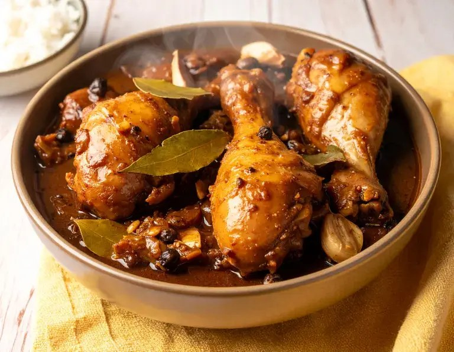

Home
Chicken Adobo

Description
Adobo is often called the unofficial national dish of the Philippines, and pretty much every
family has their own version of it. This one uses chicken braised low and slow in a mix of
soy sauce, vinegar, garlic, bay leaves, and peppercorns until the sauce reduces down to
something thick and glossy. It keeps well for a few days in the fridge and honestly tastes
even better the next day, once the flavors have had time to settle in.
Ingredients
- 1 kg chicken, cut into pieces (thighs and legs work best)
- 1/2 cup soy sauce
- 1/4 cup white or coconut vinegar
- 1/4 cup water
- 6 cloves garlic, crushed
- 3-4 dried bay leaves
- 1 tsp whole peppercorns
- 1 tbsp cooking oil
- 1 tsp brown sugar (optional)
Steps
- In a pot, combine the chicken, soy sauce, vinegar, water, garlic, bay leaves, and peppercorns. Do not stir yet — let it marinate for about 15 minutes.
- Place the pot over medium-high heat and bring to a boil without stirring.
- Once boiling, lower the heat and let it simmer for about 30 minutes, turning the chicken occasionally, until tender.
- Remove the chicken pieces and set aside. Continue simmering the sauce until it reduces and thickens slightly.
- In a separate pan, heat the oil and sear the chicken pieces until lightly browned on the outside.
- Pour the reduced sauce back over the chicken and add the brown sugar if using. Simmer for another 2-3 minutes.
- Serve hot over steamed white rice.
Home